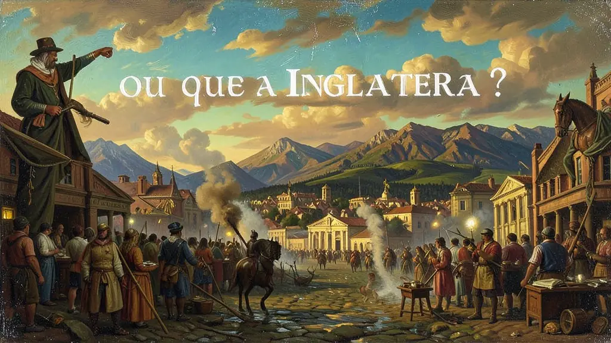
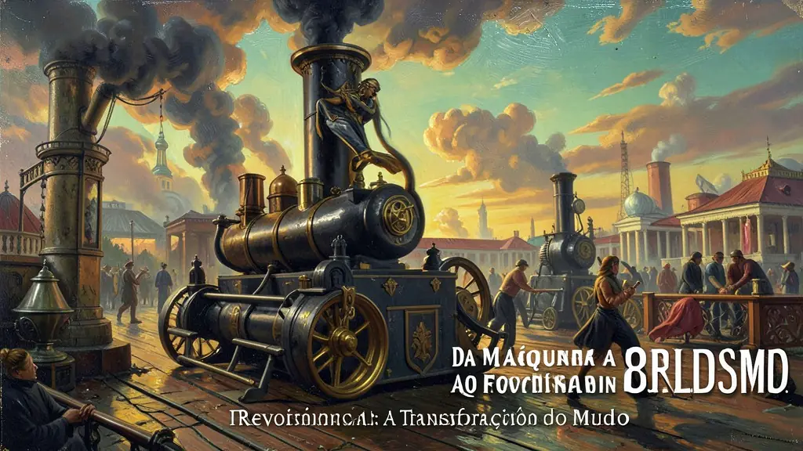
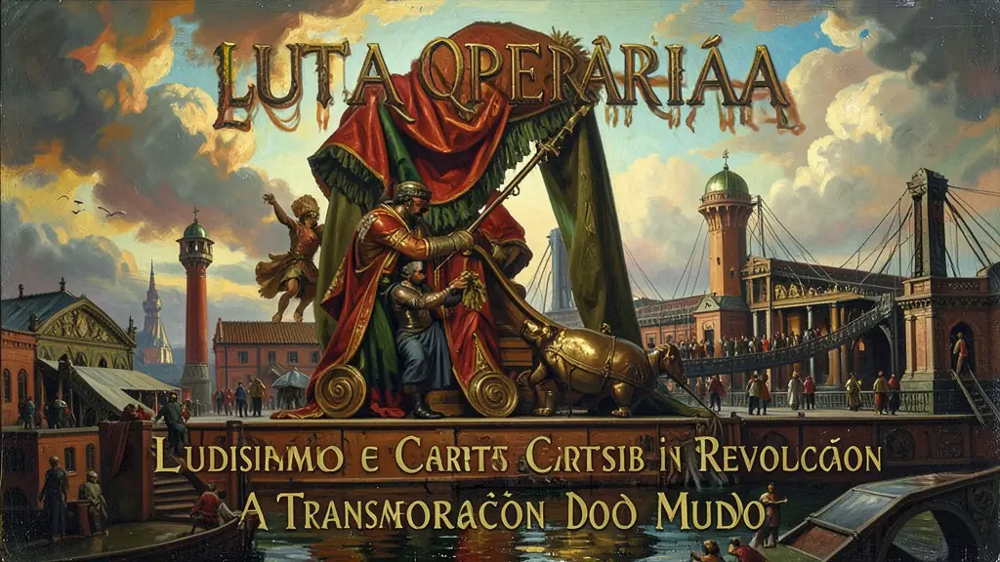

Capítulo 01
1. Por que a Inglaterra? O Berço da Indústria
A Inglaterra era a rainha dos mares e detinha o controle das rotas comerciais mais ricas. Além da marinha forte, possuía uma burguesia com poder político no Parlamento após a Revolução Gloriosa (1688). Somado a isso, o carvão mineral estava aflorando no solo inglês, facilitando a extração. O camponês expulso pela lã (ovelhas) não teve outra opção a não ser aceitar os salários de miséria das primeiras fábricas.

Capítulo 02
2. Da Máquina a Vapor ao Fordismo
A produção mudou radicalmente. No Fordismo, a esteira rolante trazia a peça até o operário. O tempo passou a ser controlado por cronômetros ('Tempo é dinheiro'). Isso aumentou a produtividade absurdamente, tornando produtos que antes eram de luxo em acessíveis para as massas. Contudo, transformou o homem em um 'apêndice da máquina', tema clássico do filme 'Tempos Modernos' de Charlie Chaplin.

Capítulo 03
3. Luta Operária: Ludismo e Cartismo
Os trabalhadores não aceitaram a exploração calados. O Ludismo (liderado por Ned Ludd) acreditava que a máquina era o inimigo. Já os Cartistas escreveram a 'Carta do Povo', pedindo que o trabalhador pudesse ser eleito para o parlamento inglês para criar leis protetoras. Dessas lutas nasceram as leis proibindo o trabalho infantil e limitando a jornada de trabalho para 8 horas diárias.

Capítulo 04
4. Impacto Geopolítico: O Imperialismo
As potências industriais começaram a brigar por mercados e matérias-primas. A Europa dividiu a África na Conferência de Berlim apenas para garantir ferro, borracha e carvão. Isso plantou as sementes para a I Guerra Mundial em 1914. A riqueza industrial europeia foi construída sobre o sangue e o roubo das riquezas do 'Sul Global'.
Capítulo 05
5. Indústria 4.0: O Perigo da Automação
A revolução continua hoje com a biotecnologia e a IA. O desafio moderno é o desemprego estrutural. Diferente das revoluções anteriores que criavam novos empregos, a robótica atual substitui o cérebro humano em tarefas complexas. O ENEM costuma cobrar a desigualdade tecnológica entre países ricos e pobres nesse cenário de alta tecnologia digital.
A deflagração da pioneira Revolução Industrial de terras bretãs setecentistas inauguraria transformações não apenas puramente tecnicistas mercadológicas, entretanto determinou para época e perenidade os abalos magnos absolutos em todos os nichos macrofísicos sobre o trato da nova classe humana proletariada global. Como sublinhou Hobsbawm a era da chaminé não seria primórdio sem avanço e abolição das posses rurais comuns expropriados da lã britânica (Cercamentos - Enclosures).
Configura a instauração implacável absoluta maquinizada da fiação algodonística capitalista substituindo a artesania medieval secular, transmigrando os detentora originário detentor destituidos para exércitos urbanizados depauperados empesteados da neblina cinza carvão – constituíram o proletariado industrial nascedouro miserabilizado fustigado aos apelos das máquinas não fadadas cansarem ao rigor mortíferas das insalubridades da jornada incessante fabril sem direitos.
Em todo eixo cobrado referem-se os pilares deste avassalador acontecimento social, da formação nevrálgica alienadora – subprodutos da mecanização extrema. De luditas revulsos ingleses na tentativa das quebras da enfurecidas máquinas das tecelagem as organizações do ludismo operário moderno o impacto transbordaria a pauta estritamente do aço transubstanciando como núcleo irradicável fundador do capitalismo em sua marcha civilizatória contemporânea industrial.
Fonte: HOBSBAWM, Eric. A Era das Revoluções. Paz e Terra, 2012.
Atividades interativas
Questões para fixar
O movimento dos 'Quebradores de Máquinas' ou Ludismo, ocorrido na Inglaterra no início do século XIX, representava:
A passagem do artesanato para a manufatura e, posteriormente, para a maquinofatura provocou na vida do trabalhador:
Qual foi o principal fator que contribuiu para o início da Primeira Revolução Industrial na Inglaterra?
Qual foi o movimento que lutou por direitos políticos e voto universal durante a Primeira Revolução Industrial?
Qual é o principal desafio enfrentado pela sociedade na Quarta Revolução Industrial ou Indústria 4.0?